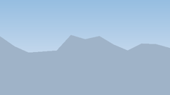
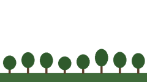

Hiyerarşi, uzay ve kamera
Nesneleri iç içe gruplamanın bir koordinat sistemi kurmak olduğunu bir araç üzerinde deneyecek, kameranın anlatım gücünü görüş açısı ve paralaksla keşfedeceksiniz.
- Transform'un üç alanını işlevleriyle açıklar.
- Yerel ve dünya uzayı farkını bir örnekle gösterir.
- Orthographic ve Perspective kamerayı yerinde kullanır.
Başlangıç dosyaları





Adımlar
- Katmanları içe aktarın
Üç arka plan görselini içe aktarın: PPU 32, Filter Mode Bilinear (bunlar piksel sanatı değil). Üçünü de sahneye koyun, Position (0, 0, 0).
- Sıralama
Sprite Renderer'larda Order in Layer: uzak −30, orta −20, yakın −10. Z değerine dokunmayın: 2B'de önde olanı sıralama belirler.
Kontrol: Dağlar arkada, ağaçlar önde görünüyor. - Kamera boyutu
Main Camera'yı seçin: Projection Orthographic. Size değerini 3, 4,2 ve 8 yapıp karşılaştırın. Görselin ekranı dolduracağı değeri bırakın (yaklaşık 4,2: görsel 270 piksel / 32 PPU = 8,4 birim yüksek; Size ekranın yarı yüksekliği).
- Paralaks
Üç katmana
Paralaks.csekleyin. Oran: uzak 0,9, orta 0,6, yakın 0,3. Main Camera'yaKameraKaydir.csekleyin. ▶ ile ok tuşlarına basın.Kontrol: Dağlar çok yavaş, tepeler orta hızda, ağaçlar hızlı kayıyor. - Deney
Üç katmanın oranını da 0 yapın, sonra 1 yapın. Ne oluyor? Oranı 1'e yakın bir katman neden “uzakta” görünüyor?
- Araç hiyerarşisi
Boş bir nesne oluşturun:
Arac, Position (0, 0.5, 0). Altına çocuk olarak bir küp (Govde, Scale 1,4 × 0,5 × 2,4) ve dört silindir (Teker_OnSolvb., Scale 0,6 × 0,1 × 0,6, Rotation Z 90) ekleyin. Tekerlekleri gövdenin köşelerine yerleştirin.Kontrol: Hierarchy'de Arac'ın altında beş çocuk var. - Ebeveyni döndürün
Yalnızca
Arac'ı seçip Rotation Y değerini değiştirin. Tekerleklerin Inspector'daki Position değerlerine bakın: değişiyor mu?Kontrol: Araç bütün hâlde dönüyor; tekerleklerin yerel Position değerleri hiç değişmiyor. - Sürün
Arac'aTasitHareket.csekleyin. Zemine bir düzlem koyun. ▶ ile ok tuşlarıyla sürün. - Uzayı değiştirin
Oyunu durdurup Uzay alanını World yapın, tekrar sürün. Aracı 90° döndürüp ileri basın. Fark ne?
Kontrol: World'de araç nereye dönük olursa olsun sahnenin ileri yönüne kayıyor. - Kamera araca bağlı
Main Camera'yı Arac'ın çocuğu yapın; aracın arkasına ve biraz yukarısına yerleştirin. Artık kamera aracı izliyor, hiç kod yazmadan.
- Görüş açısı
Kameranın Field of View değerini 30, 60 ve 100 yapıp her birinde ekran görüntüsü alın.
Yanıtlanacak sorular
Teslim ve tamamlanma ölçütleri
- 2B: üç katman doğru sırada; paralaks çalışıyor ve oranlar uzaklığa göre seçilmiş. 3B: araç iç içe nesnelerden kurulmuş ve sürülebiliyor.
- 3B: Space.Self ile Space.World farkı gösterilebiliyor; üç FOV ekran görüntüsü var.
- Üç soru yanıtlanmış.
İleri görev
2B: Paralaks.cs'yi, katmanın kameranın genişliğini aştığında kendini yeniden konumlandırıp sonsuz tekrar eden bir arka plan olacak biçimde geliştirin. 3B: aracın ön tekerleklerinin, sağa-sola dönüşte yönlendirilmesini sağlayın (yalnızca ön tekerleklerin yerel Rotation Y'si).
Sık karşılaşılan sorunlar
| Sorun | Çözüm |
|---|---|
NullReferenceException: hareket ya da FindAction satırında | Projede proje çapında eylemler tanımlı değil. Edit → Project Settings → Input System Package'da Project-wide Actions alanında InputSystem_Actions seçili olmalı. Universal şablonlarında hazır gelir. |
| Tekerlekler dönünce garip biçimde uzuyor | Gövdenin Scale'i 1'den farklıysa çocuklar da o ölçekle çarpılır. Tekerlekleri gövdenin değil Arac'ın çocuğu yapın. |
| Paralaks katmanı kameradan kaçıyor | Katmanın Z konumu kameranın önünde (0) olmalı; kameranın Z'si −10. |
Final projesine taşı
Tasarım belgenize kamera kararınızı ekleyin: sabit mi, oyuncuyu izleyen mi, öğrencinin döndürebildiği mi? Bu karar, öğrenmenin nereye odaklanacağını belirler.